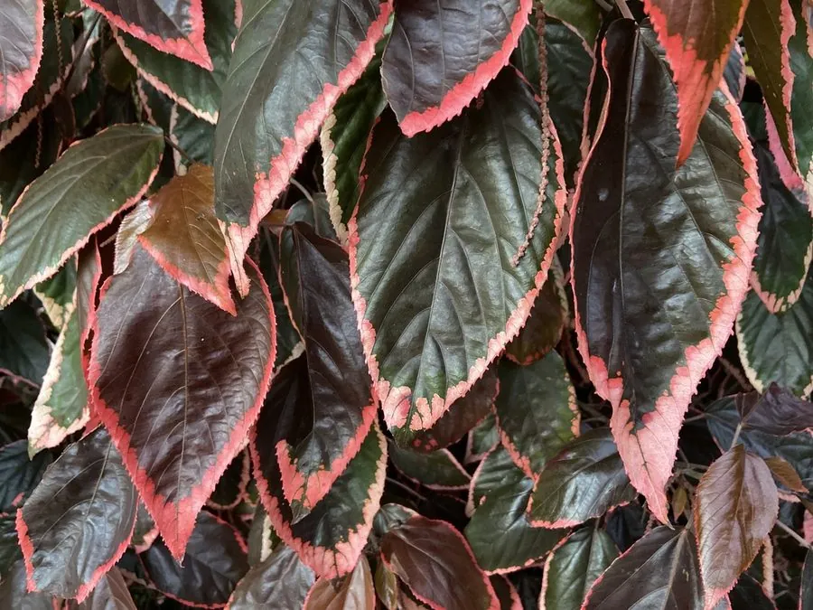

灌木与花木 · 植物界
红桑 Acalypha wilkesiana

大戟科常绿灌木，叶片宽大，具铜红、紫红与黄绿斑纹，色彩浓艳，是热带亚热带常见的观叶植物，花不显眼。
- 分类
- 门被子植物门纲木兰纲目金虎尾目科大戟科属铁苋菜属
- 栖息环境
- 热带亚热带庭院、花坛与林缘，喜温暖湿润
- 地理分布
- 原产太平洋美拉尼西亚群岛；中国华南、台湾、云南南部栽培
- 保护级别
- 暂无评估；中国未列入国家重点保护野生植物名录
物种志
红桑为大戟科铁苋菜属常绿灌木，高 1–3 米，枝条直立，全株被短柔毛。叶互生，阔卵形至心形，边缘具钝齿，叶面铜红色至紫红色，常杂有黄绿或古铜色斑纹，叶柄长。花单性同株，无花瓣，组成腋生的穗状花序，雌花基部有叶状苞片，花期全年，以夏秋较盛；果实为蒴果。
红桑原产太平洋美拉尼西亚群岛，中国华南、台湾及云南南部广泛栽培，喜温暖湿润、阳光充足的环境，不耐寒，适宜疏松肥沃、排水良好的土壤。它叶色浓艳、色彩变化丰富，是热带亚热带地区常见的观叶灌木，常植于花坛、庭院与道路绿化；园艺品种很多，有皱叶、白边、黄斑等类型。乳汁有毒，修剪时应避免接触眼睛与伤口。
形态与习性
- 株高1–3 米，枝条直立
- 花期全年，夏秋较盛，花不显眼
- 叶色铜红、紫红，常具黄绿斑纹
- 光照喜光，也耐半阴
- 水分喜湿润，忌积水
- 土壤疏松肥沃、排水良好的壤土
- 主要用途花坛、庭院与道路观叶绿化
趣味知识
- 红桑的叶片色彩浓艳，常被误认为开红花，其实花很小、不显眼。
- 它的园艺品种很多，有皱叶、白边、黄斑等不同类型。
- 红桑原产太平洋岛屿，中国华南一带广泛栽培。
- 红桑的乳汁有毒，修剪时需戴手套、避免接触伤口。